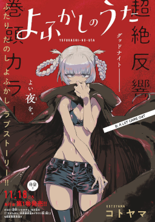
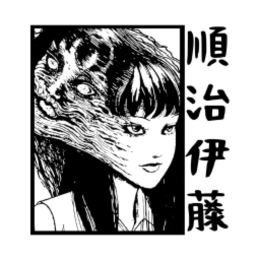
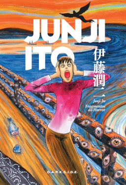
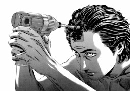

Denji é um jovem deprimido que está tentando pagar a dívida de seu falecido pai com a yakuza vendendo vários de seus órgãos e trabalhando como caçador de demônios. Denji também possui um demônio parecido com um cachorro chamado Pochita, que se assemelha a uma motosserra e auxilia Denji em seu trabalho.

Yofukashi no uta
Kou Yamori parece um típico aluno do ensino médio na superfície. Relativamente bom nos estudos e gentil com os seus colegas, ele não mede esforços para manter essa fachada. Um dia, porém, ele decide parar de fingir e abandona a escola, desenvolvendo insônia.

Tomie
A série de histórias envolve uma colegial chamada Tomie que possui uma personalidade perversa: usa de sua bela aparência para manipular suas vítimas, em sua maioria, homens. A finalidade da colegial é brincar com as pessoas ao ponto de tirá-las da sanidade e, por fim, terem a vontade de cortar a menina em pedaços

Ito Junji Kyoufu Manga Collection - Flesh-Colored Horror
Uma turma de dissecação com um assunto nada comum. Um funeral em que os mortos definitivamente não são postos para descansar. Variando do aterrorizante ao cômico, do erótico para o repugnante, essas histórias apresentam o retorno de Junji Ito há muito aguardado para o mundo do horror.

Homunculus
Manabu Ito é um rico estudante de medicina de 22 anos com bastante conhecimento na área da psicologia humana e fisiologia. No entanto, sua grande preocupação se encontra em realizar a cirurgia conhecida como trepanação. Para fazer isso, ele busca o paciente ideal, Nakoshi, que vive no limite entre dois mundos.